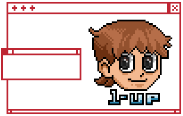
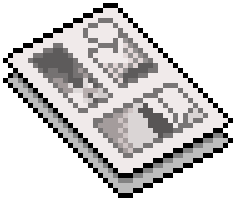

CV



Experiencia:_
Freelance
Artista Multimedia
Enero 2012 - Presente
Creación de assets para Videojuegos, ilustraciones para distintas plataformas en estilo realista y pixel art. Creación de contenido original en video y mezcla en vivo del mismo en eventos como VJ. Creación de promociones para las redes sociales en formato físico y de video para distintos eventos (stories, posts, posters, flyers).
Apeshit Mods
Artista Pixel Art
Octubre de 2018 - Enero 2020
Diseño y creación de assets para pantallas del programa "Heebie-GBs" y stickers de cartuchos, entre otros.
Andreani Logística
Facilitadora Gráfica
Abril de 2017 - Agosto de 2019
Creación de Logos y gráficas, facilitación gráfica en reuniones de equipos internos.
Reach Up High Entertainment Limited
Artista de Concepto y Entintadora de Cómics
Diciembre de 2014 - Octubre 2016
Entintado de cómics y concepto de personajes para cortometraje.
Vostu
Vectorizadora
Diciembre de 2009 - Noviembre de 2010
Trabajos de vectorización en Adobe Flash para el proyecto Mini Fazenda. Brainstorming y bocetos para items de las colecciones.
_Estudios:
2018 - Presente
Licenciatura en Artes Multimediales
Universidad Nacional de las Artes
La carrera de Licenciado en Arte Multimedial tiene 4 materias troncales que son Informática Aplicada, Laboratorio de Sonido, Proyectos visuales y Artes multimediales. Las materias de la misma apuntan a otorgar herramientas para crear y producir proyectos multimediales, diseñar, procesar y montar sonidos, música e imagen, manejar Bases de Datos y lenguajes de programación específicos, analizar y evaluar obras multimediales, y participar en proyectos de investigación vinculados a las artes multimediales.
2014
Diseño de Fondos
Instituto Animaclick
El programa del curso de diseño de backgrounds incluye: orientación específica sobre dirección de arte, ilustración, color, inspiracionales, concept art, diseño de fondos, multiplanos, iluminación, desarrollo de escenas animadas, etc.
2013
Título Terciario - Maestra Nacional de Dibujo
Instituto Superior de Formación Artística Rogelio Yrurtia
Formación artística terciaria en la carrera de 5 años de arte que incluye las materias troncales de: Dibujo, Pintura, Grabado y Escultura, también otras materias como Morfología, Sistema de Composición, Matemática Especializada y Pedagogía, entre otras.
Participación en actividades extracurriculares: pintura de Murales, Exposiciones artísticas en la Corporación del Sur (Noche de los Museos).
2012 - 2013
Operaria de Pre-Impresión Digital
Fundación Gutemberg
Entre otros conocimientos del curso se resaltan: estudio del flujo de trabajo que se realiza en la industria gráfica en general, como se trabaja con distintos sistemas de manejo de color, como hacer pruebas de impresión en offset e impresoras caseras, extensivo entrenamiento de manejo de programas de la suite Adobe, entre ellos Indesign, Illustrator y Photoshop. Docente: Ugo Riverón (Adobe Comunity Expert).
2010 - 2011
Dibujo Manga Nivel 1 y 2
Instituto "La Ola"
Estudio de dibujo Manga con el profesor Walther Taborda.